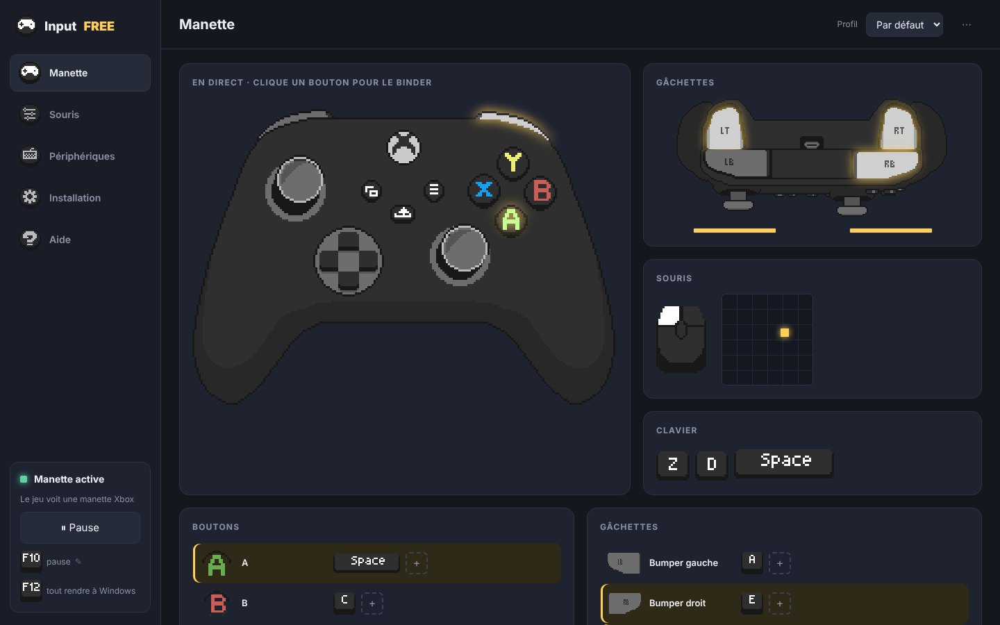

01Binds
ASauterEspace
RTTirerClic gauche
LS ↑AvancerZ
YChanger d'armeAppuie sur une touche
Binds en un clic
Clique un bouton de la manette, appuie sur ta touche : c'est bindé. Jusqu'à 4 touches par bouton.
InputFREE transforme ton clavier et ta souris en manette Xbox 360 que tes jeux reconnaissent instantanément. Binds en un clic, visée à la souris réglable au millimètre.
Tout est inclus : les pilotes de la manette virtuelle, de la souris/clavier virtuels et du partage USB s'installent en un clic depuis le logiciel.

Clique un bouton de la manette, appuie sur ta touche : c'est bindé. Jusqu'à 4 touches par bouton.
Sensibilité, anti-zone morte, courbe et lissage : une visée fluide qui passe la zone morte du jeu.
En mode USB, clavier et souris passent par un mini Linux isolé : le jeu ne voit que la manette, fini les icônes qui clignotent.
F12 rend tout à Windows instantanément. Si le logiciel plante, souris et clavier reviennent seuls en moins de 3 secondes.
F10 par défaut, ou la touche que tu veux, même un bouton de souris : la manette se met en pause, Windows redevient normal.
Chaque jeu a ses binds et ses réglages de visée. Tout est enregistré automatiquement.
Dis-nous ce que tu veux voir dans la prochaine version.
Première capture confirmée par un clic, F12 à tout moment, retour automatique en cas de souci. Tu ne perds jamais le contrôle.
Pas de compte, pas d'essai, pas d'abonnement. Tu télécharges, tu joues.
Une seule fenêtre en français, une manette animée en direct, des binds qui se font en un clic.
Télécharge, installe les composants en un clic, et appuie sur F10 dans ton jeu.
Un seul fichier. Accepte la demande administrateur de Windows.
Onglet Installation → « Installer ». Redémarre si demandé, puis coche ta souris et ton clavier.
Lance ton jeu, active la manette et joue. F12 rend tout à Windows.
InputFREE n'est pas signé numériquement, donc SmartScreen te prévient. Clique sur « Informations complémentaires » puis « Exécuter quand même ». Si Defender met le fichier en quarantaine, restaure-le dans Sécurité Windows → Historique de protection.
Pour installer les pilotes de la manette virtuelle et partager ta souris et ton clavier USB avec le mini Linux du mode USB.
Il a besoin de WSL 2 et de la virtualisation du processeur (Intel VT-x ou AMD SVM) activée dans le BIOS. Redémarre ton PC si l'installation te le demande. Le mode simple fonctionne sans tout ça.
Non : F12 rend tout immédiatement, la première capture demande une confirmation, et si le logiciel se ferme ou plante, tout revient seul en moins de 3 secondes. Sur un PC portable, le clavier intégré reste toujours sur Windows.
Le mode USB utilise l'hyperviseur de Windows, que Roblox prend pour une machine virtuelle. Dans InputFREE → Installation → « Compatibilité Roblox », coupe-le en un clic puis redémarre : Roblox refonctionne et InputFREE passe en mode simple. Tu peux le réactiver à tout moment.
Certains jeux interdisent les adaptateurs clavier/souris vers manette dans leurs règles. Vérifie les conditions du jeu avant de l'utiliser en ligne.